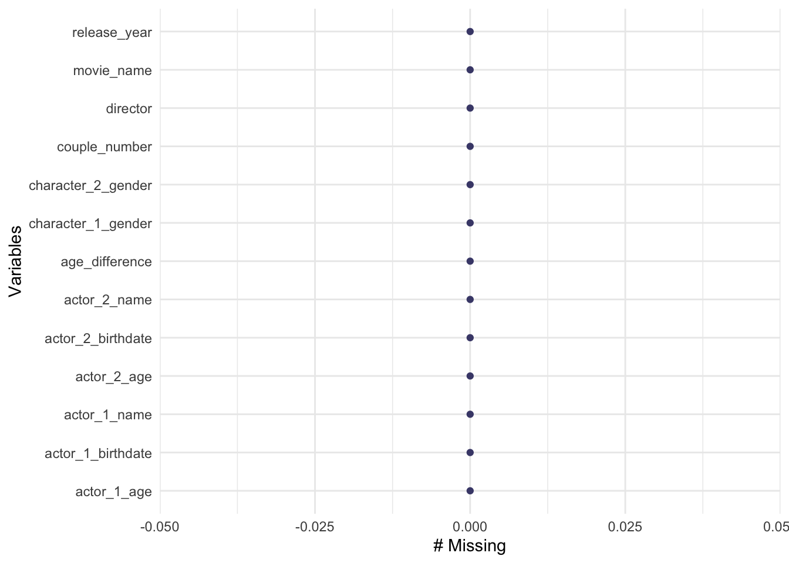
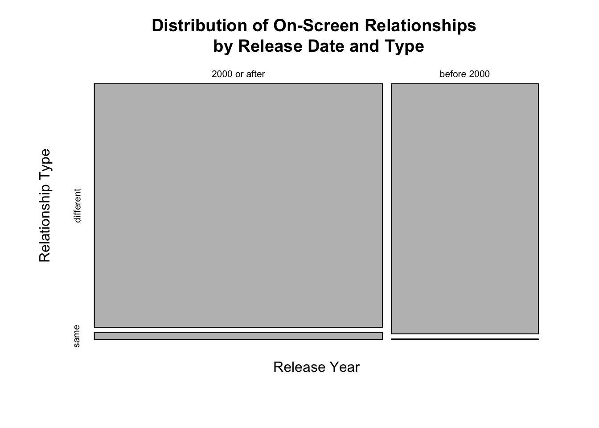
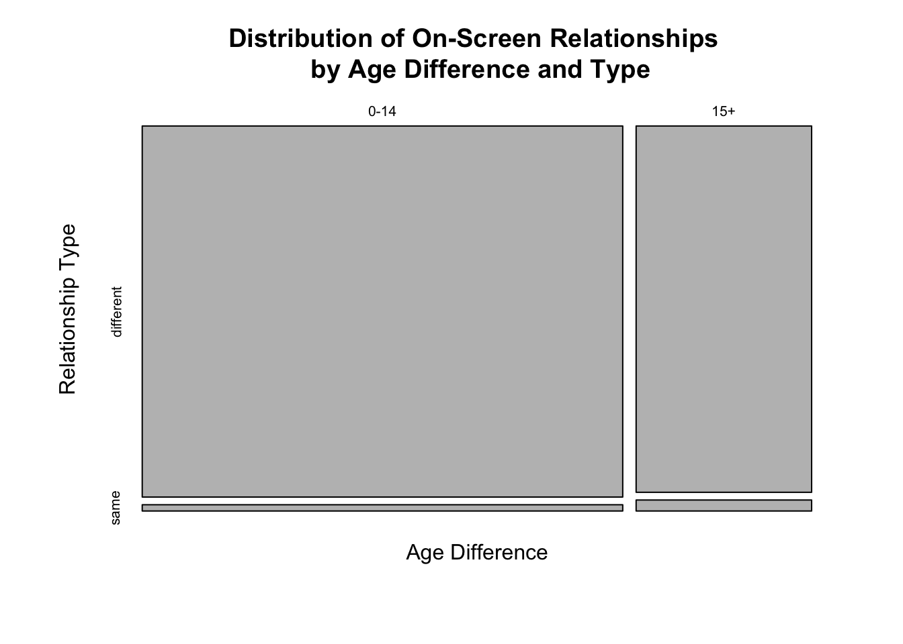

<!DOCTYPE html>
<html xmlns="http://www.w3.org/1999/xhtml" lang="en" xml:lang="en"><head>

<meta charset="utf-8">
<meta name="generator" content="quarto-1.2.313">

<meta name="viewport" content="width=device-width, initial-scale=1.0, user-scalable=yes">


<title>My Data Analysis Portfolio - Tidy Tuesday Exercise</title>
<style>
code{white-space: pre-wrap;}
span.smallcaps{font-variant: small-caps;}
div.columns{display: flex; gap: min(4vw, 1.5em);}
div.column{flex: auto; overflow-x: auto;}
div.hanging-indent{margin-left: 1.5em; text-indent: -1.5em;}
ul.task-list{list-style: none;}
ul.task-list li input[type="checkbox"] {
  width: 0.8em;
  margin: 0 0.8em 0.2em -1.6em;
  vertical-align: middle;
}
pre > code.sourceCode { white-space: pre; position: relative; }
pre > code.sourceCode > span { display: inline-block; line-height: 1.25; }
pre > code.sourceCode > span:empty { height: 1.2em; }
.sourceCode { overflow: visible; }
code.sourceCode > span { color: inherit; text-decoration: inherit; }
div.sourceCode { margin: 1em 0; }
pre.sourceCode { margin: 0; }
@media screen {
div.sourceCode { overflow: auto; }
}
@media print {
pre > code.sourceCode { white-space: pre-wrap; }
pre > code.sourceCode > span { text-indent: -5em; padding-left: 5em; }
}
pre.numberSource code
  { counter-reset: source-line 0; }
pre.numberSource code > span
  { position: relative; left: -4em; counter-increment: source-line; }
pre.numberSource code > span > a:first-child::before
  { content: counter(source-line);
    position: relative; left: -1em; text-align: right; vertical-align: baseline;
    border: none; display: inline-block;
    -webkit-touch-callout: none; -webkit-user-select: none;
    -khtml-user-select: none; -moz-user-select: none;
    -ms-user-select: none; user-select: none;
    padding: 0 4px; width: 4em;
    color: #aaaaaa;
  }
pre.numberSource { margin-left: 3em; border-left: 1px solid #aaaaaa;  padding-left: 4px; }
div.sourceCode
  {   }
@media screen {
pre > code.sourceCode > span > a:first-child::before { text-decoration: underline; }
}
code span.al { color: #ff0000; font-weight: bold; } /* Alert */
code span.an { color: #60a0b0; font-weight: bold; font-style: italic; } /* Annotation */
code span.at { color: #7d9029; } /* Attribute */
code span.bn { color: #40a070; } /* BaseN */
code span.bu { color: #008000; } /* BuiltIn */
code span.cf { color: #007020; font-weight: bold; } /* ControlFlow */
code span.ch { color: #4070a0; } /* Char */
code span.cn { color: #880000; } /* Constant */
code span.co { color: #60a0b0; font-style: italic; } /* Comment */
code span.cv { color: #60a0b0; font-weight: bold; font-style: italic; } /* CommentVar */
code span.do { color: #ba2121; font-style: italic; } /* Documentation */
code span.dt { color: #902000; } /* DataType */
code span.dv { color: #40a070; } /* DecVal */
code span.er { color: #ff0000; font-weight: bold; } /* Error */
code span.ex { } /* Extension */
code span.fl { color: #40a070; } /* Float */
code span.fu { color: #06287e; } /* Function */
code span.im { color: #008000; font-weight: bold; } /* Import */
code span.in { color: #60a0b0; font-weight: bold; font-style: italic; } /* Information */
code span.kw { color: #007020; font-weight: bold; } /* Keyword */
code span.op { color: #666666; } /* Operator */
code span.ot { color: #007020; } /* Other */
code span.pp { color: #bc7a00; } /* Preprocessor */
code span.sc { color: #4070a0; } /* SpecialChar */
code span.ss { color: #bb6688; } /* SpecialString */
code span.st { color: #4070a0; } /* String */
code span.va { color: #19177c; } /* Variable */
code span.vs { color: #4070a0; } /* VerbatimString */
code span.wa { color: #60a0b0; font-weight: bold; font-style: italic; } /* Warning */
</style>


<script src="site_libs/quarto-nav/quarto-nav.js"></script>
<script src="site_libs/quarto-nav/headroom.min.js"></script>
<script src="site_libs/clipboard/clipboard.min.js"></script>
<script src="site_libs/quarto-search/autocomplete.umd.js"></script>
<script src="site_libs/quarto-search/fuse.min.js"></script>
<script src="site_libs/quarto-search/quarto-search.js"></script>
<meta name="quarto:offset" content="./">
<script src="site_libs/quarto-html/quarto.js"></script>
<script src="site_libs/quarto-html/popper.min.js"></script>
<script src="site_libs/quarto-html/tippy.umd.min.js"></script>
<script src="site_libs/quarto-html/anchor.min.js"></script>
<link href="site_libs/quarto-html/tippy.css" rel="stylesheet">
<link href="site_libs/quarto-html/quarto-syntax-highlighting.css" rel="stylesheet" id="quarto-text-highlighting-styles">
<script src="site_libs/bootstrap/bootstrap.min.js"></script>
<link href="site_libs/bootstrap/bootstrap-icons.css" rel="stylesheet">
<link href="site_libs/bootstrap/bootstrap.min.css" rel="stylesheet" id="quarto-bootstrap" data-mode="light">
<script id="quarto-search-options" type="application/json">{
  "location": "navbar",
  "copy-button": false,
  "collapse-after": 3,
  "panel-placement": "end",
  "type": "overlay",
  "limit": 20,
  "language": {
    "search-no-results-text": "No results",
    "search-matching-documents-text": "matching documents",
    "search-copy-link-title": "Copy link to search",
    "search-hide-matches-text": "Hide additional matches",
    "search-more-match-text": "more match in this document",
    "search-more-matches-text": "more matches in this document",
    "search-clear-button-title": "Clear",
    "search-detached-cancel-button-title": "Cancel",
    "search-submit-button-title": "Submit"
  }
}</script>


<link rel="stylesheet" href="styles.css">
</head>

<body class="nav-fixed fullcontent">

<div id="quarto-search-results"></div>
  <header id="quarto-header" class="headroom fixed-top">
    <nav class="navbar navbar-expand-lg navbar-dark ">
      <div class="navbar-container container-fluid">
      <div class="navbar-brand-container">
    <a class="navbar-brand" href="./index.html">
    <span class="navbar-title">My Data Analysis Portfolio</span>
    </a>
  </div>
          <button class="navbar-toggler" type="button" data-bs-toggle="collapse" data-bs-target="#navbarCollapse" aria-controls="navbarCollapse" aria-expanded="false" aria-label="Toggle navigation" onclick="if (window.quartoToggleHeadroom) { window.quartoToggleHeadroom(); }">
  <span class="navbar-toggler-icon"></span>
</button>
          <div class="collapse navbar-collapse" id="navbarCollapse">
            <ul class="navbar-nav navbar-nav-scroll me-auto">
  <li class="nav-item">
    <a class="nav-link" href="././aboutme.html">
 <span class="menu-text">About Me</span></a>
  </li>  
  <li class="nav-item dropdown ">
    <a class="nav-link dropdown-toggle" href="#" id="nav-menu-projects" role="button" data-bs-toggle="dropdown" aria-expanded="false">
 <span class="menu-text">Projects</span>
    </a>
    <ul class="dropdown-menu" aria-labelledby="nav-menu-projects">    
        <li>
    <a class="dropdown-item" href="././coding_exercise.html">
 <span class="dropdown-text">R Coding Exercise</span></a>
  </li>  
        <li>
    <a class="dropdown-item" href="././visualization_exercise.html">
 <span class="dropdown-text">Visualization Exercise</span></a>
  </li>  
        <li>
    <a class="dropdown-item" href="././dataanalysis_exercise.html">
 <span class="dropdown-text">Data Analysis Exercise</span></a>
  </li>  
        <li>
    <a class="dropdown-item" href="././tidytuesday_exercise.html">
 <span class="dropdown-text">Tidy Tuesday Exercise</span></a>
  </li>  
    </ul>
  </li>
  <li class="nav-item dropdown ">
    <a class="nav-link dropdown-toggle" href="#" id="nav-menu-flu-analysis" role="button" data-bs-toggle="dropdown" aria-expanded="false">
 <span class="menu-text">Flu Analysis</span>
    </a>
    <ul class="dropdown-menu" aria-labelledby="nav-menu-flu-analysis">    
        <li>
    <a class="dropdown-item" href="././fluanalysis/code/wrangling.html">
 <span class="dropdown-text">Wrangling</span></a>
  </li>  
        <li>
    <a class="dropdown-item" href="././fluanalysis/code/exploring.html">
 <span class="dropdown-text">Exploration</span></a>
  </li>  
        <li>
    <a class="dropdown-item" href="././fluanalysis/code/fitting.html">
 <span class="dropdown-text">Fitting</span></a>
  </li>  
        <li>
    <a class="dropdown-item" href="./fluanalysis/code/modeleval.html">
 <span class="dropdown-text">Model Evaluation</span></a>
  </li>  
        <li>
    <a class="dropdown-item" href="./fluanalysis/code/machinelearning.html">
 <span class="dropdown-text">Machine Learning</span></a>
  </li>  
    </ul>
  </li>
</ul>
            <ul class="navbar-nav navbar-nav-scroll ms-auto">
  <li class="nav-item compact">
    <a class="nav-link" href="https://github.com/A-Tro-24/aidantroha-MADA-portfolio"><i class="bi bi-github" role="img">
</i> 
 <span class="menu-text"></span></a>
  </li>  
</ul>
              <div id="quarto-search" class="" title="Search"></div>
          </div> <!-- /navcollapse -->
      </div> <!-- /container-fluid -->
    </nav>
</header>
<!-- content -->
<div id="quarto-content" class="quarto-container page-columns page-rows-contents page-layout-article page-navbar">
<!-- sidebar -->
<!-- margin-sidebar -->
    
<!-- main -->
<main class="content" id="quarto-document-content">

<header id="title-block-header" class="quarto-title-block default">
<div class="quarto-title">
<h1 class="title">Tidy Tuesday Exercise</h1>
</div>


<div class="quarto-title-meta">

    
  
    
  </div>
  

</header>

<p>##Packages Used</p>
<div class="cell">
<div class="sourceCode cell-code" id="cb1"><pre class="sourceCode r code-with-copy"><code class="sourceCode r"><span id="cb1-1"><a href="#cb1-1" aria-hidden="true" tabindex="-1"></a><span class="fu">library</span>(tidyverse)</span></code><button title="Copy to Clipboard" class="code-copy-button"><i class="bi"></i></button></pre></div>
<div class="cell-output cell-output-stderr">
<pre><code>── Attaching packages ─────────────────────────────────────── tidyverse 1.3.2 ──
✔ ggplot2 3.4.1     ✔ purrr   0.3.4
✔ tibble  3.1.8     ✔ dplyr   1.1.0
✔ tidyr   1.2.1     ✔ stringr 1.4.1
✔ readr   2.1.2     ✔ forcats 0.5.2
── Conflicts ────────────────────────────────────────── tidyverse_conflicts() ──
✖ dplyr::filter() masks stats::filter()
✖ dplyr::lag()    masks stats::lag()</code></pre>
</div>
<div class="sourceCode cell-code" id="cb3"><pre class="sourceCode r code-with-copy"><code class="sourceCode r"><span id="cb3-1"><a href="#cb3-1" aria-hidden="true" tabindex="-1"></a><span class="fu">library</span>(exact2x2)</span></code><button title="Copy to Clipboard" class="code-copy-button"><i class="bi"></i></button></pre></div>
<div class="cell-output cell-output-stderr">
<pre><code>Loading required package: exactci
Loading required package: ssanv
Loading required package: testthat

Attaching package: 'testthat'

The following object is masked from 'package:dplyr':

    matches

The following object is masked from 'package:purrr':

    is_null

The following objects are masked from 'package:readr':

    edition_get, local_edition

The following object is masked from 'package:tidyr':

    matches</code></pre>
</div>
</div>
<p>##Importing the Data</p>
<div class="cell">
<div class="sourceCode cell-code" id="cb5"><pre class="sourceCode r code-with-copy"><code class="sourceCode r"><span id="cb5-1"><a href="#cb5-1" aria-hidden="true" tabindex="-1"></a>ttdata <span class="ot">&lt;-</span> <span class="fu">data.frame</span>(tidytuesdayR<span class="sc">::</span><span class="fu">tt_load</span>(<span class="st">'2023-02-14'</span>)<span class="sc">$</span>age_gaps)</span></code><button title="Copy to Clipboard" class="code-copy-button"><i class="bi"></i></button></pre></div>
<div class="cell-output cell-output-stderr">
<pre><code>--- Compiling #TidyTuesday Information for 2023-02-14 ----</code></pre>
</div>
<div class="cell-output cell-output-stderr">
<pre><code>--- There is 1 file available ---</code></pre>
</div>
<div class="cell-output cell-output-stderr">
<pre><code>--- Starting Download ---</code></pre>
</div>
<div class="cell-output cell-output-stdout">
<pre><code>
    Downloading file 1 of 1: `age_gaps.csv`</code></pre>
</div>
<div class="cell-output cell-output-stderr">
<pre><code>--- Download complete ---</code></pre>
</div>
</div>
<p>##Viewing the Data</p>
<div class="cell">
<div class="sourceCode cell-code" id="cb11"><pre class="sourceCode r code-with-copy"><code class="sourceCode r"><span id="cb11-1"><a href="#cb11-1" aria-hidden="true" tabindex="-1"></a><span class="co"># Gives a summary of the data</span></span>
<span id="cb11-2"><a href="#cb11-2" aria-hidden="true" tabindex="-1"></a><span class="fu">glimpse</span>(ttdata)</span></code><button title="Copy to Clipboard" class="code-copy-button"><i class="bi"></i></button></pre></div>
<div class="cell-output cell-output-stdout">
<pre><code>Rows: 1,155
Columns: 13
$ movie_name         &lt;chr&gt; "Harold and Maude", "Venus", "The Quiet American", …
$ release_year       &lt;dbl&gt; 1971, 2006, 2002, 1998, 2010, 1992, 2009, 1999, 199…
$ director           &lt;chr&gt; "Hal Ashby", "Roger Michell", "Phillip Noyce", "Joe…
$ age_difference     &lt;dbl&gt; 52, 50, 49, 45, 43, 42, 40, 39, 38, 38, 36, 36, 35,…
$ couple_number      &lt;dbl&gt; 1, 1, 1, 1, 1, 1, 1, 1, 1, 1, 1, 1, 1, 1, 1, 1, 1, …
$ actor_1_name       &lt;chr&gt; "Ruth Gordon", "Peter O'Toole", "Michael Caine", "D…
$ actor_2_name       &lt;chr&gt; "Bud Cort", "Jodie Whittaker", "Do Thi Hai Yen", "T…
$ character_1_gender &lt;chr&gt; "woman", "man", "man", "man", "man", "man", "man", …
$ character_2_gender &lt;chr&gt; "man", "woman", "woman", "woman", "man", "woman", "…
$ actor_1_birthdate  &lt;date&gt; 1896-10-30, 1932-08-02, 1933-03-14, 1930-09-17, 19…
$ actor_2_birthdate  &lt;date&gt; 1948-03-29, 1982-06-03, 1982-10-01, 1975-11-08, 19…
$ actor_1_age        &lt;dbl&gt; 75, 74, 69, 68, 81, 59, 62, 69, 57, 77, 59, 56, 65,…
$ actor_2_age        &lt;dbl&gt; 23, 24, 20, 23, 38, 17, 22, 30, 19, 39, 23, 20, 30,…</code></pre>
</div>
<div class="sourceCode cell-code" id="cb13"><pre class="sourceCode r code-with-copy"><code class="sourceCode r"><span id="cb13-1"><a href="#cb13-1" aria-hidden="true" tabindex="-1"></a><span class="co"># Checks to ensure all characters are defined at "man" and "woman"</span></span>
<span id="cb13-2"><a href="#cb13-2" aria-hidden="true" tabindex="-1"></a><span class="fu">unique</span>(ttdata<span class="sc">$</span>character_1_gender)</span></code><button title="Copy to Clipboard" class="code-copy-button"><i class="bi"></i></button></pre></div>
<div class="cell-output cell-output-stdout">
<pre><code>[1] "woman" "man"  </code></pre>
</div>
<div class="sourceCode cell-code" id="cb15"><pre class="sourceCode r code-with-copy"><code class="sourceCode r"><span id="cb15-1"><a href="#cb15-1" aria-hidden="true" tabindex="-1"></a><span class="fu">unique</span>(ttdata<span class="sc">$</span>character_2_gender)</span></code><button title="Copy to Clipboard" class="code-copy-button"><i class="bi"></i></button></pre></div>
<div class="cell-output cell-output-stdout">
<pre><code>[1] "man"   "woman"</code></pre>
</div>
<div class="sourceCode cell-code" id="cb17"><pre class="sourceCode r code-with-copy"><code class="sourceCode r"><span id="cb17-1"><a href="#cb17-1" aria-hidden="true" tabindex="-1"></a><span class="co"># Checks for any missing values</span></span>
<span id="cb17-2"><a href="#cb17-2" aria-hidden="true" tabindex="-1"></a>naniar<span class="sc">::</span><span class="fu">gg_miss_var</span>(ttdata)</span></code><button title="Copy to Clipboard" class="code-copy-button"><i class="bi"></i></button></pre></div>
<div class="cell-output cell-output-stderr">
<pre><code>Warning: The `guide` argument in `scale_*()` cannot be `FALSE`. This was deprecated in
ggplot2 3.3.4.
ℹ Please use "none" instead.
ℹ The deprecated feature was likely used in the naniar package.
  Please report the issue at &lt;]8;;https://github.com/njtierney/naniar/issueshttps://github.com/njtierney/naniar/issues]8;;&gt;.</code></pre>
</div>
<div class="cell-output-display">
<p></p>
</div>
</div>
<p>According to the <code>gg_miss_var()</code> function in the <code>naniar</code> package, we see that there are no missing values in any of the variables.<br>
We can forgo usual data repair.</p>
<p>##Objectives<br>
According to the variables, we may be interested in seeing the proportion of on-screen romances that occur between heterosexual and homosexual couples presented on the big screen. We may also wonder if these relationships are typical of this data set. We also may notice that a wide age gap between these on-screen relationships.</p>
<p>###Questions:</p>
<p>####1. What proportion of movies depict same-sex relationships? Is this surprising?</p>
<p>####2. What happens when er compare these proportions after and before the year 2000? Is there a difference?</p>
<p>####3. What are the odds of having an excessively high age difference given relationship type?</p>
<p>###Acquiring Needed Data</p>
<div class="cell">
<div class="sourceCode cell-code" id="cb19"><pre class="sourceCode r code-with-copy"><code class="sourceCode r"><span id="cb19-1"><a href="#cb19-1" aria-hidden="true" tabindex="-1"></a>dt <span class="ot">&lt;-</span> ttdata <span class="sc">%&gt;%</span></span>
<span id="cb19-2"><a href="#cb19-2" aria-hidden="true" tabindex="-1"></a><span class="co"># Chooses only variables of interest</span></span>
<span id="cb19-3"><a href="#cb19-3" aria-hidden="true" tabindex="-1"></a>                  <span class="fu">select</span>(character_1_gender,character_2_gender,age_difference,release_year) <span class="sc">%&gt;%</span></span>
<span id="cb19-4"><a href="#cb19-4" aria-hidden="true" tabindex="-1"></a><span class="co"># Creates a new variables based on whether the genders of the two characters are the same</span></span>
<span id="cb19-5"><a href="#cb19-5" aria-hidden="true" tabindex="-1"></a>                  <span class="fu">mutate</span>(<span class="at">relate_type =</span> <span class="fu">ifelse</span>(character_1_gender <span class="sc">==</span> character_2_gender,<span class="st">"same"</span>,<span class="st">"different"</span>),</span>
<span id="cb19-6"><a href="#cb19-6" aria-hidden="true" tabindex="-1"></a><span class="co"># Changes the parameter to a bivariate outcome: `before 2000` and `2000 and after`</span></span>
<span id="cb19-7"><a href="#cb19-7" aria-hidden="true" tabindex="-1"></a>                         <span class="at">release_year =</span> <span class="fu">ifelse</span>(release_year <span class="sc">&gt;=</span> <span class="dv">2000</span>,</span>
<span id="cb19-8"><a href="#cb19-8" aria-hidden="true" tabindex="-1"></a>                                               <span class="st">"2000 or after"</span>,</span>
<span id="cb19-9"><a href="#cb19-9" aria-hidden="true" tabindex="-1"></a>                                               <span class="st">"before 2000"</span>),</span>
<span id="cb19-10"><a href="#cb19-10" aria-hidden="true" tabindex="-1"></a><span class="co"># Changes the parameter to a bivariate outcome: `0-14` and `15+`</span></span>
<span id="cb19-11"><a href="#cb19-11" aria-hidden="true" tabindex="-1"></a>                         <span class="at">age_difference =</span> <span class="fu">ifelse</span>(age_difference <span class="sc">&lt;</span> <span class="dv">15</span>,</span>
<span id="cb19-12"><a href="#cb19-12" aria-hidden="true" tabindex="-1"></a>                                                 <span class="st">"0-14"</span>,</span>
<span id="cb19-13"><a href="#cb19-13" aria-hidden="true" tabindex="-1"></a>                                                 <span class="st">"15+"</span>))</span></code><button title="Copy to Clipboard" class="code-copy-button"><i class="bi"></i></button></pre></div>
</div>
<p>Here, we select for only the data that suits our needs. We only want to see the characters’ genders and their age differences. In order for our analyses to work, we must convert the <code>age_difference</code> variable into a binary outcome, so we condition the age differences of the actors into 2 categories: 0-14 and 15+. This way, we can construct a 2-way table to represent the distribution of age differences based on on-screen relationship pairs.</p>
<p>###1.<br>
###Representing the Data</p>
<div class="cell">
<div class="sourceCode cell-code" id="cb20"><pre class="sourceCode r code-with-copy"><code class="sourceCode r"><span id="cb20-1"><a href="#cb20-1" aria-hidden="true" tabindex="-1"></a><span class="co"># Converts the data into a 2-way table representing each pair</span></span>
<span id="cb20-2"><a href="#cb20-2" aria-hidden="true" tabindex="-1"></a>part1 <span class="ot">&lt;-</span> <span class="fu">with</span>(dt,<span class="fu">table</span>(character_1_gender,character_2_gender))</span>
<span id="cb20-3"><a href="#cb20-3" aria-hidden="true" tabindex="-1"></a><span class="co"># Makes the table more readable</span></span>
<span id="cb20-4"><a href="#cb20-4" aria-hidden="true" tabindex="-1"></a><span class="fu">names</span>(<span class="fu">dimnames</span>(part1)) <span class="ot">&lt;-</span> <span class="fu">c</span>(<span class="st">"Character 1"</span>,<span class="st">"Character 2"</span>)</span>
<span id="cb20-5"><a href="#cb20-5" aria-hidden="true" tabindex="-1"></a><span class="co"># Shows row and column totals</span></span>
<span id="cb20-6"><a href="#cb20-6" aria-hidden="true" tabindex="-1"></a>part1 <span class="sc">%&gt;%</span> <span class="fu">addmargins</span>()</span></code><button title="Copy to Clipboard" class="code-copy-button"><i class="bi"></i></button></pre></div>
<div class="cell-output cell-output-stdout">
<pre><code>           Character 2
Character 1  man woman  Sum
      man     12   929  941
      woman  203    11  214
      Sum    215   940 1155</code></pre>
</div>
</div>
<p>The table above represents the the number of on-screen romances. We can see that only 12 films represent gay relationships and that 11 films represent lesbian relationships, meaning there are a total of 23 films with some kind of homosexual representation in these 1155 films. It may be helpful to examine their relative proportions:</p>
<div class="cell">
<div class="sourceCode cell-code" id="cb22"><pre class="sourceCode r code-with-copy"><code class="sourceCode r"><span id="cb22-1"><a href="#cb22-1" aria-hidden="true" tabindex="-1"></a><span class="co"># Shows cell proportions</span></span>
<span id="cb22-2"><a href="#cb22-2" aria-hidden="true" tabindex="-1"></a>part1_props <span class="ot">&lt;-</span> <span class="fu">prop.table</span>(part1)</span>
<span id="cb22-3"><a href="#cb22-3" aria-hidden="true" tabindex="-1"></a>part1_props</span></code><button title="Copy to Clipboard" class="code-copy-button"><i class="bi"></i></button></pre></div>
<div class="cell-output cell-output-stdout">
<pre><code>           Character 2
Character 1        man      woman
      man   0.01038961 0.80432900
      woman 0.17575758 0.00952381</code></pre>
</div>
</div>
<p>Here, we see that less than 2% of these 1155 films had homosexual representation of some sort. Using a binomial distribution, we can determine if this is an uncommon occurrence:</p>
<div class="cell">
<div class="sourceCode cell-code" id="cb24"><pre class="sourceCode r code-with-copy"><code class="sourceCode r"><span id="cb24-1"><a href="#cb24-1" aria-hidden="true" tabindex="-1"></a>part1 <span class="ot">&lt;-</span> part1 <span class="sc">%&gt;%</span> <span class="fu">addmargins</span>()</span>
<span id="cb24-2"><a href="#cb24-2" aria-hidden="true" tabindex="-1"></a><span class="co"># Simple proportion test using 95% Confidence Interval</span></span>
<span id="cb24-3"><a href="#cb24-3" aria-hidden="true" tabindex="-1"></a>DescTools<span class="sc">::</span><span class="fu">BinomCI</span>(part1[<span class="dv">1</span>,<span class="dv">1</span>]<span class="sc">+</span>part1[<span class="dv">2</span>,<span class="dv">2</span>],part1[<span class="dv">3</span>,<span class="dv">3</span>])</span></code><button title="Copy to Clipboard" class="code-copy-button"><i class="bi"></i></button></pre></div>
<div class="cell-output cell-output-stdout">
<pre><code>            est     lwr.ci     upr.ci
[1,] 0.01991342 0.01330551 0.02970422</code></pre>
</div>
</div>
<p>Based on the calculations above, we can say that with 95% confidence, the true proportion of films with gay representation lies inside the interval 1.33% and 2.97%. This is still a very small percentage, so we might conclude that gay representation is still very low.</p>
<p>But maybe more and more films have begun to prominently display gay relationships since 2000. How can we show this?</p>
<p>###2.<br>
###Representing the Data</p>
<div class="cell">
<div class="sourceCode cell-code" id="cb26"><pre class="sourceCode r code-with-copy"><code class="sourceCode r"><span id="cb26-1"><a href="#cb26-1" aria-hidden="true" tabindex="-1"></a><span class="co"># Converts the data into a 2-way table representing on-screen relationships</span></span>
<span id="cb26-2"><a href="#cb26-2" aria-hidden="true" tabindex="-1"></a><span class="co"># stratified by release year and relationship type</span></span>
<span id="cb26-3"><a href="#cb26-3" aria-hidden="true" tabindex="-1"></a>part2 <span class="ot">&lt;-</span> <span class="fu">with</span>(dt,<span class="fu">table</span>(relate_type,release_year))</span>
<span id="cb26-4"><a href="#cb26-4" aria-hidden="true" tabindex="-1"></a><span class="co"># Makes the table more readable</span></span>
<span id="cb26-5"><a href="#cb26-5" aria-hidden="true" tabindex="-1"></a><span class="fu">names</span>(<span class="fu">dimnames</span>(part2)) <span class="ot">&lt;-</span> <span class="fu">c</span>(<span class="st">"Relationship Type"</span>,<span class="st">"Release Year"</span>)</span>
<span id="cb26-6"><a href="#cb26-6" aria-hidden="true" tabindex="-1"></a><span class="co"># Shows row and column totals</span></span>
<span id="cb26-7"><a href="#cb26-7" aria-hidden="true" tabindex="-1"></a>part2 <span class="sc">%&gt;%</span> <span class="fu">addmargins</span>()</span></code><button title="Copy to Clipboard" class="code-copy-button"><i class="bi"></i></button></pre></div>
<div class="cell-output cell-output-stdout">
<pre><code>                 Release Year
Relationship Type 2000 or after before 2000  Sum
        different           743         389 1132
        same                 22           1   23
        Sum                 765         390 1155</code></pre>
</div>
</div>
<p>We can choose to display the data as a table, but it can be difficult to quickly interpret the potential relationships between variables. Often, data in 2-way tables are displayed as mosaic plots for this reason.</p>
<div class="cell">
<div class="sourceCode cell-code" id="cb28"><pre class="sourceCode r code-with-copy"><code class="sourceCode r"><span id="cb28-1"><a href="#cb28-1" aria-hidden="true" tabindex="-1"></a><span class="co"># Constructs a mosaic plot of the data</span></span>
<span id="cb28-2"><a href="#cb28-2" aria-hidden="true" tabindex="-1"></a><span class="fu">mosaicplot</span>(<span class="at">data=</span>dt, release_year <span class="sc">~</span> relate_type,</span>
<span id="cb28-3"><a href="#cb28-3" aria-hidden="true" tabindex="-1"></a>           <span class="at">main =</span> <span class="st">"Distribution of On-Screen Relationships </span><span class="sc">\n</span><span class="st"> by Release Date and Type"</span>,</span>
<span id="cb28-4"><a href="#cb28-4" aria-hidden="true" tabindex="-1"></a>           <span class="at">xlab =</span> <span class="st">"Release Year"</span>,</span>
<span id="cb28-5"><a href="#cb28-5" aria-hidden="true" tabindex="-1"></a>           <span class="at">ylab =</span> <span class="st">"Relationship Type"</span>)</span></code><button title="Copy to Clipboard" class="code-copy-button"><i class="bi"></i></button></pre></div>
<div class="cell-output-display">
<p></p>
</div>
</div>
<p>Now, we can easily see that heterosexual relationships are still much more common than same sex relationships, but compared to before 2000, there appear to be more same sex relationships in 2000 and after.</p>
<p>Now let’s see if this increased number of same sex couples represented on screen is due to some factor other than the increased number of films produced after 2000. We can test this by using a X^2 test for independence.</p>
<div class="cell">
<div class="sourceCode cell-code" id="cb29"><pre class="sourceCode r code-with-copy"><code class="sourceCode r"><span id="cb29-1"><a href="#cb29-1" aria-hidden="true" tabindex="-1"></a><span class="co"># Performs the continuity corrected X^2 test for independence</span></span>
<span id="cb29-2"><a href="#cb29-2" aria-hidden="true" tabindex="-1"></a><span class="fu">chisq.test</span>(part2)</span></code><button title="Copy to Clipboard" class="code-copy-button"><i class="bi"></i></button></pre></div>
<div class="cell-output cell-output-stdout">
<pre><code>
    Pearson's Chi-squared test with Yates' continuity correction

data:  part2
X-squared = 7.7886, df = 1, p-value = 0.005258</code></pre>
</div>
<div class="sourceCode cell-code" id="cb31"><pre class="sourceCode r code-with-copy"><code class="sourceCode r"><span id="cb31-1"><a href="#cb31-1" aria-hidden="true" tabindex="-1"></a><span class="fu">fisher.exact</span>(part2, <span class="at">midp=</span><span class="cn">TRUE</span>)</span></code><button title="Copy to Clipboard" class="code-copy-button"><i class="bi"></i></button></pre></div>
<div class="cell-output cell-output-stdout">
<pre><code>
    Central Fisher's Exact Test (mid-p version)

data:  part2
p-value = 0.0009636
alternative hypothesis: true odds ratio is not equal to 1
95 percent confidence interval:
 0.00415314 0.47003856
sample estimates:
odds ratio 
0.08691912 </code></pre>
</div>
</div>
<p>Here, we use two tests for independence: the standard X^2 procedure and the Fisher’s exact test. The Fisher’s exact test is a special form of the X^2 test used when one or more of the cell counts is less than 5. Based on the results of the X^2 test displayed above, we conclude that same sex representation is not independent from release year.</p>
<div class="cell">
<div class="sourceCode cell-code" id="cb33"><pre class="sourceCode r code-with-copy"><code class="sourceCode r"><span id="cb33-1"><a href="#cb33-1" aria-hidden="true" tabindex="-1"></a><span class="co"># Shows the expected values used in the X^2 test</span></span>
<span id="cb33-2"><a href="#cb33-2" aria-hidden="true" tabindex="-1"></a><span class="fu">chisq.test</span>(part2)<span class="sc">$</span>expected</span></code><button title="Copy to Clipboard" class="code-copy-button"><i class="bi"></i></button></pre></div>
<div class="cell-output cell-output-stdout">
<pre><code>                 Release Year
Relationship Type 2000 or after before 2000
        different     749.76623  382.233766
        same           15.23377    7.766234</code></pre>
</div>
<div class="sourceCode cell-code" id="cb35"><pre class="sourceCode r code-with-copy"><code class="sourceCode r"><span id="cb35-1"><a href="#cb35-1" aria-hidden="true" tabindex="-1"></a><span class="co"># Shows the residuals from the X^2 test</span></span>
<span id="cb35-2"><a href="#cb35-2" aria-hidden="true" tabindex="-1"></a><span class="fu">chisq.test</span>(part2)<span class="sc">$</span>res</span></code><button title="Copy to Clipboard" class="code-copy-button"><i class="bi"></i></button></pre></div>
<div class="cell-output cell-output-stdout">
<pre><code>                 Release Year
Relationship Type 2000 or after before 2000
        different    -0.2471064   0.3460848
        same          1.7335779  -2.4279613</code></pre>
</div>
</div>
<p>According to the residuals presented in the table above, same sex relationships showed a higher probability of occurrence after 2000 than before 2000, indicating an increase in the number of these relationships since the year 2000.</p>
<p>###3.<br>
###Representing the data</p>
<div class="cell">
<div class="sourceCode cell-code" id="cb37"><pre class="sourceCode r code-with-copy"><code class="sourceCode r"><span id="cb37-1"><a href="#cb37-1" aria-hidden="true" tabindex="-1"></a><span class="co"># Converts the data into a 2-way table representing on-screen relationships</span></span>
<span id="cb37-2"><a href="#cb37-2" aria-hidden="true" tabindex="-1"></a><span class="co"># stratified by age difference and relationship type</span></span>
<span id="cb37-3"><a href="#cb37-3" aria-hidden="true" tabindex="-1"></a>part3 <span class="ot">&lt;-</span> <span class="fu">with</span>(dt,<span class="fu">table</span>(relate_type,age_difference))</span>
<span id="cb37-4"><a href="#cb37-4" aria-hidden="true" tabindex="-1"></a><span class="co"># Makes the table more readable</span></span>
<span id="cb37-5"><a href="#cb37-5" aria-hidden="true" tabindex="-1"></a><span class="fu">names</span>(<span class="fu">dimnames</span>(part3)) <span class="ot">&lt;-</span> <span class="fu">c</span>(<span class="st">"Relationship Type"</span>,<span class="st">"Age Difference"</span>)</span>
<span id="cb37-6"><a href="#cb37-6" aria-hidden="true" tabindex="-1"></a><span class="co"># Shows row and column totals</span></span>
<span id="cb37-7"><a href="#cb37-7" aria-hidden="true" tabindex="-1"></a>part3 <span class="sc">%&gt;%</span> <span class="fu">addmargins</span>()</span></code><button title="Copy to Clipboard" class="code-copy-button"><i class="bi"></i></button></pre></div>
<div class="cell-output cell-output-stdout">
<pre><code>                 Age Difference
Relationship Type 0-14  15+  Sum
        different  832  300 1132
        same        14    9   23
        Sum        846  309 1155</code></pre>
</div>
</div>
<p>Above, we can see the 2-way table for age difference vs.&nbsp;relationship type, and below is the mosaic plot.</p>
<div class="cell">
<div class="sourceCode cell-code" id="cb39"><pre class="sourceCode r code-with-copy"><code class="sourceCode r"><span id="cb39-1"><a href="#cb39-1" aria-hidden="true" tabindex="-1"></a><span class="co"># Constructs a mosaic plot of the data</span></span>
<span id="cb39-2"><a href="#cb39-2" aria-hidden="true" tabindex="-1"></a><span class="fu">mosaicplot</span>(<span class="at">data=</span>dt, age_difference<span class="sc">~</span> relate_type,</span>
<span id="cb39-3"><a href="#cb39-3" aria-hidden="true" tabindex="-1"></a>           <span class="at">main =</span> <span class="st">"Distribution of On-Screen Relationships </span><span class="sc">\n</span><span class="st"> by Age Difference and Type"</span>,</span>
<span id="cb39-4"><a href="#cb39-4" aria-hidden="true" tabindex="-1"></a>           <span class="at">xlab =</span> <span class="st">"Age Difference"</span>,</span>
<span id="cb39-5"><a href="#cb39-5" aria-hidden="true" tabindex="-1"></a>           <span class="at">ylab =</span> <span class="st">"Relationship Type"</span>)</span></code><button title="Copy to Clipboard" class="code-copy-button"><i class="bi"></i></button></pre></div>
<div class="cell-output-display">
<p></p>
</div>
</div>
<p>Using an odds ratio, we may be able to identify a relationship between age difference and relationship type.</p>
<div class="cell">
<div class="sourceCode cell-code" id="cb40"><pre class="sourceCode r code-with-copy"><code class="sourceCode r"><span id="cb40-1"><a href="#cb40-1" aria-hidden="true" tabindex="-1"></a>epitools<span class="sc">::</span><span class="fu">oddsratio</span>(part3)</span></code><button title="Copy to Clipboard" class="code-copy-button"><i class="bi"></i></button></pre></div>
<div class="cell-output cell-output-stdout">
<pre><code>$data
                 Age Difference
Relationship Type 0-14 15+ Total
        different  832 300  1132
        same        14   9    23
        Total      846 309  1155

$measure
                 odds ratio with 95% C.I.
Relationship Type estimate     lower    upper
        different 1.000000        NA       NA
        same      1.792952 0.7319929 4.166928

$p.value
                 two-sided
Relationship Type midp.exact fisher.exact chi.square
        different         NA           NA         NA
        same       0.1934065    0.2314329  0.1755846

$correction
[1] FALSE

attr(,"method")
[1] "median-unbiased estimate &amp; mid-p exact CI"</code></pre>
</div>
</div>
<p>According to the analyses above, the data fail to establish an association between relationship type and actors’ age difference.</p>


</main> <!-- /main -->
<script id="quarto-html-after-body" type="application/javascript">
window.document.addEventListener("DOMContentLoaded", function (event) {
  const toggleBodyColorMode = (bsSheetEl) => {
    const mode = bsSheetEl.getAttribute("data-mode");
    const bodyEl = window.document.querySelector("body");
    if (mode === "dark") {
      bodyEl.classList.add("quarto-dark");
      bodyEl.classList.remove("quarto-light");
    } else {
      bodyEl.classList.add("quarto-light");
      bodyEl.classList.remove("quarto-dark");
    }
  }
  const toggleBodyColorPrimary = () => {
    const bsSheetEl = window.document.querySelector("link#quarto-bootstrap");
    if (bsSheetEl) {
      toggleBodyColorMode(bsSheetEl);
    }
  }
  toggleBodyColorPrimary();  
  const icon = "";
  const anchorJS = new window.AnchorJS();
  anchorJS.options = {
    placement: 'right',
    icon: icon
  };
  anchorJS.add('.anchored');
  const clipboard = new window.ClipboardJS('.code-copy-button', {
    target: function(trigger) {
      return trigger.previousElementSibling;
    }
  });
  clipboard.on('success', function(e) {
    // button target
    const button = e.trigger;
    // don't keep focus
    button.blur();
    // flash "checked"
    button.classList.add('code-copy-button-checked');
    var currentTitle = button.getAttribute("title");
    button.setAttribute("title", "Copied!");
    let tooltip;
    if (window.bootstrap) {
      button.setAttribute("data-bs-toggle", "tooltip");
      button.setAttribute("data-bs-placement", "left");
      button.setAttribute("data-bs-title", "Copied!");
      tooltip = new bootstrap.Tooltip(button, 
        { trigger: "manual", 
          customClass: "code-copy-button-tooltip",
          offset: [0, -8]});
      tooltip.show();    
    }
    setTimeout(function() {
      if (tooltip) {
        tooltip.hide();
        button.removeAttribute("data-bs-title");
        button.removeAttribute("data-bs-toggle");
        button.removeAttribute("data-bs-placement");
      }
      button.setAttribute("title", currentTitle);
      button.classList.remove('code-copy-button-checked');
    }, 1000);
    // clear code selection
    e.clearSelection();
  });
  function tippyHover(el, contentFn) {
    const config = {
      allowHTML: true,
      content: contentFn,
      maxWidth: 500,
      delay: 100,
      arrow: false,
      appendTo: function(el) {
          return el.parentElement;
      },
      interactive: true,
      interactiveBorder: 10,
      theme: 'quarto',
      placement: 'bottom-start'
    };
    window.tippy(el, config); 
  }
  const noterefs = window.document.querySelectorAll('a[role="doc-noteref"]');
  for (var i=0; i<noterefs.length; i++) {
    const ref = noterefs[i];
    tippyHover(ref, function() {
      // use id or data attribute instead here
      let href = ref.getAttribute('data-footnote-href') || ref.getAttribute('href');
      try { href = new URL(href).hash; } catch {}
      const id = href.replace(/^#\/?/, "");
      const note = window.document.getElementById(id);
      return note.innerHTML;
    });
  }
  const findCites = (el) => {
    const parentEl = el.parentElement;
    if (parentEl) {
      const cites = parentEl.dataset.cites;
      if (cites) {
        return {
          el,
          cites: cites.split(' ')
        };
      } else {
        return findCites(el.parentElement)
      }
    } else {
      return undefined;
    }
  };
  var bibliorefs = window.document.querySelectorAll('a[role="doc-biblioref"]');
  for (var i=0; i<bibliorefs.length; i++) {
    const ref = bibliorefs[i];
    const citeInfo = findCites(ref);
    if (citeInfo) {
      tippyHover(citeInfo.el, function() {
        var popup = window.document.createElement('div');
        citeInfo.cites.forEach(function(cite) {
          var citeDiv = window.document.createElement('div');
          citeDiv.classList.add('hanging-indent');
          citeDiv.classList.add('csl-entry');
          var biblioDiv = window.document.getElementById('ref-' + cite);
          if (biblioDiv) {
            citeDiv.innerHTML = biblioDiv.innerHTML;
          }
          popup.appendChild(citeDiv);
        });
        return popup.innerHTML;
      });
    }
  }
});
</script>
</div> <!-- /content -->


</body></html>